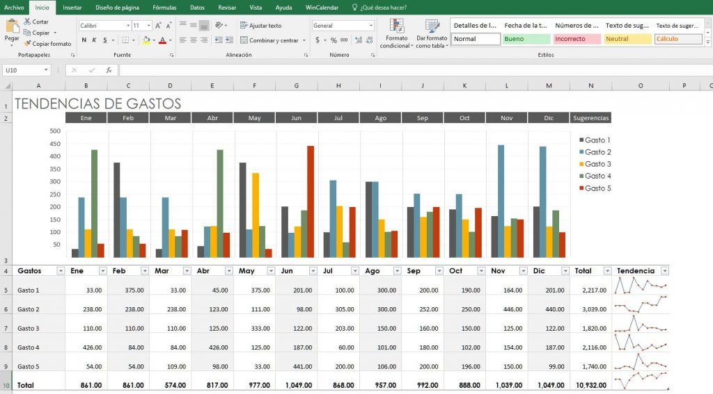

Excel y sus configuraciones basicas
Las configuraciones basicas de excel que todos debemos saber
Las configuraciones basicas de excel que todos debemos saber
En este capítulo, iniciaremos con una Introducción a Excel a detalle. Los puntos marcados en este artículo te serán de gran utilidad para la mayoría de las versiones. En caso de que haya algún cambio a tomar en cuenta, haremos la observación correspondiente.
Microsoft Excel, es una herramienta muy eficaz, fácil de utilizar, que le permite al usuario crear, personalizar y administrar; fácil y rápidamente archivos de trabajo, siendo esta una herramienta ampliamente utilizada.
Este software que pertenece a la suite de Office permite crear tablas, calcular y analizar datos. Es comúnmente denominado software de hoja de cálculo.
Como te lo comenté más arriba, Excel pertenece a la suite de Microsoft Office, de la cual se han lanzado al mercado varias versiones.
Excel ha estado presente prácticamente desde 1990, sin embargo, las versiones que aún siguen vigentes son 2007, 2010, 2013, office 365, 2016 y 2019
En Excel podrás crear tablas que calculan de forma automática los totales de los valores numéricos que especifiques, imprimir tablas con diseños cuidados, y crear gráficos.
Utilizando esta herramienta los usuarios podrán realizar un análisis detallado de información gracias a la facilidad de aplicar diferentes funciones al trabajo y hacerlo con mayor versatilidad, también se cuenta con un amplio número de fórmulas facilitando con esto, el poder trabajar con gran cantidad de datos, obteniendo cálculos rápidos mediante una hojas de cálculo con densas fórmulas, también permite crear gráficos de aspecto profesional con rapidez y comodidad, con posibilidad de enriquecerlos aplicando mejoras visuales y variedad de efectos.
Aprender a manejar Excel te ayudará a mejorar tu productividad, sobre todo si te desenvuelves en áreas que involucren: Matemáticas, Contabilidad, Cálculos financieros o estadística, solo por mencionar unos ejemplos.
Ahora que ya conociste una breve introducción a Excel, es momento que aprendas como descargar e instalar Excel en tu equipo.
enero 23, 2023 - Ofimatica